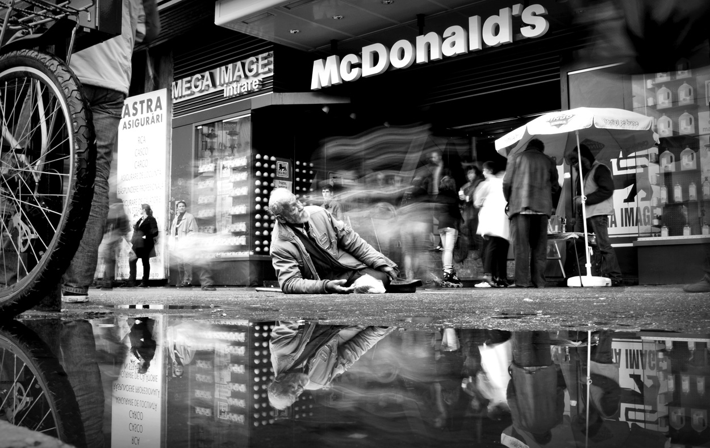
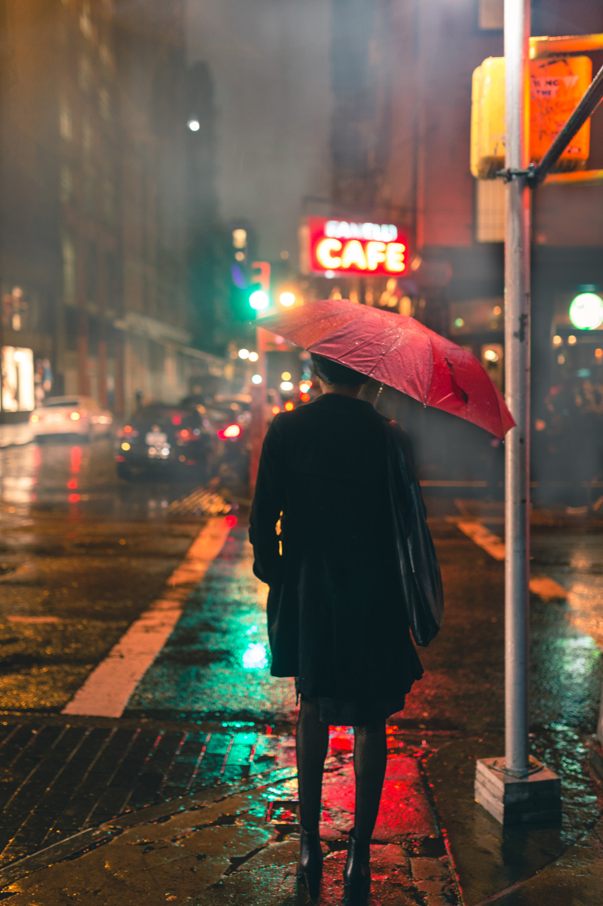

Ce este fotografia de stradă?
Street Photography în lume, fotografia de stradă la noi, are ca subiect principal, paradoxal, gândindu-ne la nume, omul. Mai precis, integrarea acestuia în peisajul urban.
Fotografia de stradă este documentară și candidă. Ea surprinde și izolează scurte momente ce ne intrigă și ce nu sunt observabile cu ochiul liber.
Încadrarea și momentul sunt factori extrem de importanți fără de care acest gen de fotografie nu poate exista. Omul, chiar dacă poate fi piesa principală a acestui puzzle, poate lipsi.
Un peisaj cu arhitectură urbană poate fi deasemenea definit ca fiind fotografie de stradă.
În fotografia de stradă sunt recomandate obiectivele wide. Un unghi de cuprindere mai larg te ajută să surprinzi mai bine atmosfera și elementele conexe din jur care contribuie la povestea ta. Fiind mai mici ca dimensiune, obiectivele wide par mai puțin amenințătoare pentru trecători și în plus nu trebuie să le orientezi direct către subiect pentru a-l prinde în cadru.
La finalul zilei, este o decizie personală pe care avem dreptul să o luăm din dorința de a ne apropia cât mai mult de cadrele pe care le visăm. Important este să decidem în cunoștință de cauză. Să știm ce câștigăm și ce pierdem cu fiecare obiectiv foto în parte.